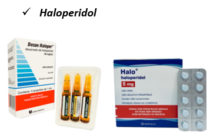

Datos generales
Identificación y nombres
Datos generales
Antipsicótico típico (butirofenona).
Nombres comerciales en Bolivia: Decan Haloper (Gotas y Comp.), Halda Alfa Peridol (Gotas y Compr.) y genéricos (Vademécum Nacional, 2022).
← Volver al Vademécum de Psicofarmacología
Clasificación: antipsicóticos.

Para:
Esquizofrenia,
episodios maníacos/mixtos del trastorno bipolar, e irritabilidad asociada al trastorno del espectro autista (TEA)
Datos generales
Identificación y nombres
Antipsicótico típico (butirofenona).
Nombres comerciales en Bolivia: Decan Haloper (Gotas y Comp.), Halda Alfa Peridol (Gotas y Compr.) y genéricos (Vademécum Nacional, 2022).
Mecanismo de acción
Farmacología
Antagonista dual de receptores de serotonina 5-HT2A y dopamina D2. El bloqueo 5-HT2A modula la liberación de dopamina reduciendo el riesgo de SEP a dosis bajas, aunque a dosis >6 mg/día pierde esta selectividad y actúa como un típico.
Cinética clínica
Farmacocinética
Latencia: 2 a 6 semanas para el efecto antipsicótico/estabilizador completo.
Vida media: 3 horas para el fármaco original, pero su metabolito activo (9-hidroxi-risperidona o paliperidona) extiende la vida media efectiva a 20-24 horas, permitiendo dosificación una vez al día.
Efectos secundarios
Seguridad y adherencia
Hiperprolactinemia muy frecuente (puede causar galactorrea, amenorrea, ginecomastia y disfunción sexual). Esto impacta directamente a la autoestima, la identidad y la adherencia al tratamiento. Aumento de peso moderado y sedación leve.